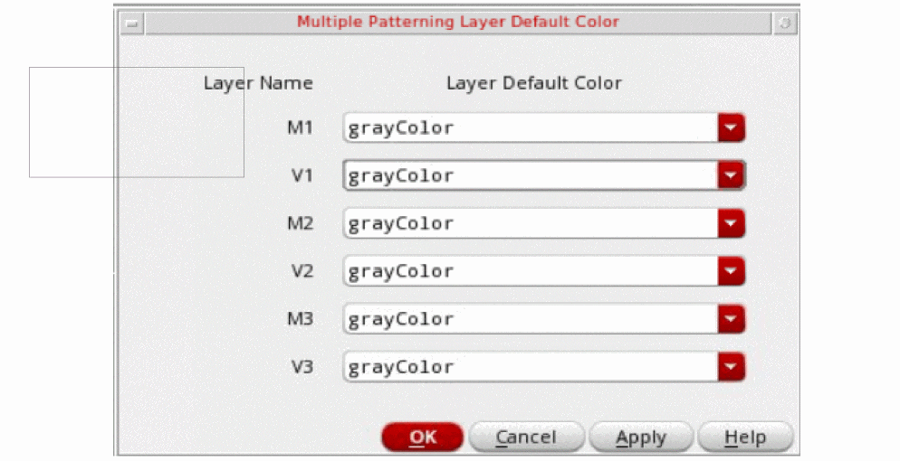

Updating Layer Default Color
Use the Multiple Patterning Layer Default Color option to change the default color for each colorable layer.
To change the default color for each colorable layer:
- Click the Layer Default Color icon.
-
Specify the layer default color for each colorable layer in the Multiple Patterning Layer Default Color form.
You can choose from the following layer default color options for each colorable layer: grayColor, mask1Color, mask2Color, mask3Color, mask4Color, alternating, No setting (if the environment variable, layerDefaultColorConsiderGrayAsColor, has been specified). The alternating option specifically applies when the color engine searches for the layer default color and the next incremental color is returned,mask1->mask2->mask3.
If you select the mask color in Palette, this selection is prioritized over other selections. In this case, alternating or other mask-specific layer default color is not used. However, if grayColor is selected in the Palette, the Layer Default Color specified in the Multiple Patterning Layer Default Color form is used.
If you specify the shell environment variable,MPT_GUI_SHOW_LOCK_DEFAULT, a lock icon is displayed on the form.
Return to top